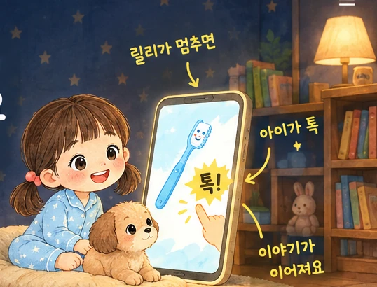

아침부터 밤까지, 하루 습관마다 2분짜리 그림책 한 편
 일어나기Wake Up!
일어나기Wake Up! 세수하기Splash, Splash!
세수하기Splash, Splash! 아침 먹기Yummy, Yummy!
아침 먹기Yummy, Yummy! 옷 입기Put On, Ready!
옷 입기Put On, Ready! 이 닦기Brush, Brush!
이 닦기Brush, Brush! 목욕하기Bath Time!
목욕하기Bath Time! 잠자기Good night!
잠자기Good night! 부모와 함께 하루 2분씩, 그 습관 시간에 한 편을 들려주세요. 아이 정보는 받지 않아요.
부모와 함께 하루 2분씩, 그 습관 시간에 한 편을 들려주세요. 아이 정보는 받지 않아요.


8초 동안 누르지 않으면 릴리가 대신 넘어가요. 틀리는 일은 없어요.


 한 편을 끝까지 들으면 스티커 세 장
한 편을 끝까지 들으면 스티커 세 장

로그인 없이 바로 시작해요
무료로 2분 들어보기